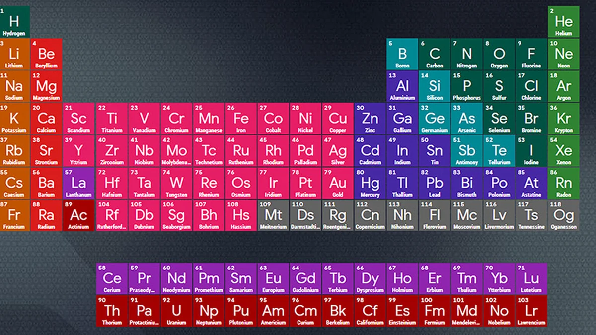

Este é um site dedicado a explorar o fascinante mundo da quimica. Aqui você encontrara informações sobre a tabela periodica, experimentos interessantes e muito mais!
Quimica 1.0 é um projeto criado por entusiastas da quimica com o objetivo de tornar a ciência mais acessivel e interessante para todos.
Aqui você encontrara informações detalhadas sobre os elementos da tabela periodica, incluindo suas propriedades, usos e curiosidades.
Explore experimentos emocionantes que você pode realizar em casa ou na sala de aula para aprender mais sobre os principios quimicos fundamentais.
Se você tiver alguma dúvida ou sugestão, não hesite em nos contatarS
Email: contato@quimica1.0.com
Nicolla 11
Victor 19
Raphael 13